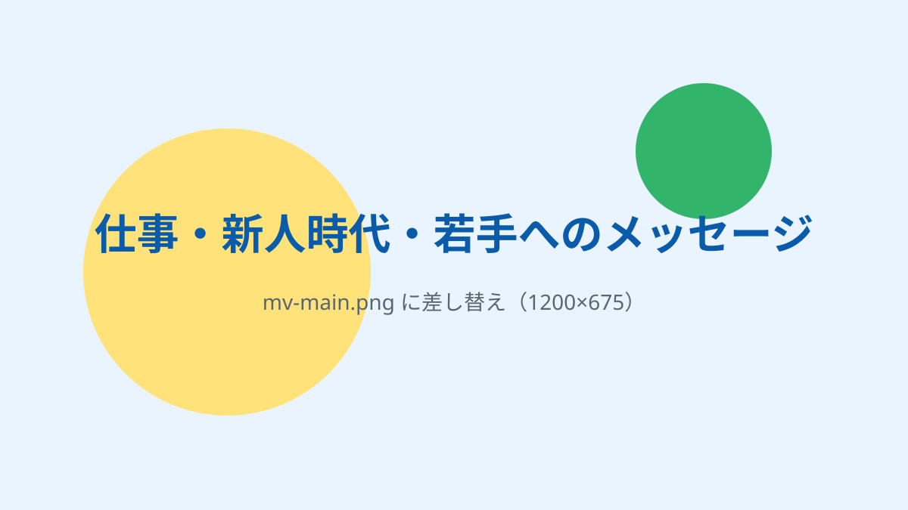
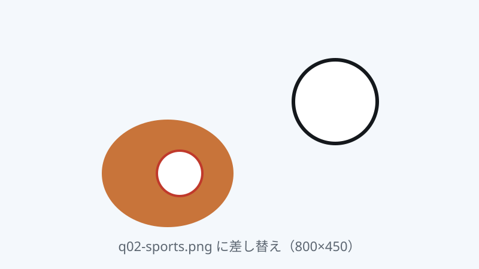

第1弾 教えて！CEO
仕事・新人時代・ 若手へのメッセージ

「CEOって、普段どんなことを考えているんだろう？」
そんな素朴な疑問を、グループ広報室が直接ぶつけてみる新シリーズ「教えて！CEO」がスタートしました。第一弾のテーマは「仕事・新人時代・若手へのメッセージ」。休日の過ごし方といった身近な話題から、仕事で大切にしている価値観、20代の頃の忘れられない経験、そして若手社員への期待まで、10の質問に答えていただきました。
会議や朝礼では見えにくい、CEOの素顔と本音。入社したばかりの方も、後輩を指導する立場の方も、ぜひ肩の力を抜いて読んでみてください。
Chapter 01
オフの素顔
まずはウォーミングアップ。仕事を離れたときのCEOは、どんな時間を過ごしているのでしょうか。
Q01/ 10
休日は何をして過ごしていますか？
愛犬の散歩をしたり、友人とキャンプに行ったり、自然の中で過ごすことが多いですね。ゴルフも好きで、身体を動かす時間がいい気分転換になっています。リラックスしているときに、新しいアイデアがふと浮かぶこともあります。
Q02/ 10
昔なりたかった職業は何ですか？
子どもの頃はスポーツ少年だったので、サッカー選手や野球選手に憧れていました。成長するにつれて、自分で何かを生み出し、人に喜んでもらえる仕事がしたいと思うようになり、広告の仕事や経営に興味を持つようになりました。

Q03/ 10
無人島に一つだけ持っていけるなら、何を持っていきますか？
丈夫なナイフですね。薪や枝を加工したり、寝床を作ったり、工夫次第でいろいろ使えそうです。アウトドアが好きなので、まずは身の回りにあるものを使って、どう過ごせるか考えると思います。
Chapter 02
仕事の流儀
ここからは少し真面目に。グループを率いるうえで、CEOが何を軸にしているのかを伺いました。
Q04/ 10
CEOが仕事をする上で、一番大切にしていることは何ですか？
一番の土台は「誠実さ」です。どんなに優れた戦略があっても、「この人なら任せられる」という信頼がなければ、物事は前に進みません。約束を守り、社員やお客様の声に耳を傾ける。そのうえで、判断や行動を先延ばしにしないことを大切にしています。
Q05/ 10
仕事のモチベーションは何ですか？
自分たちの仕事が誰かの役に立ち、その成果を仲間と喜べることです。社員の皆さんが経験を重ね、自信を持って仕事に取り組む姿も、大きな励みになります。グループの事業を通じて地域に貢献し、皆さんが力を発揮できる会社にしていくことが、私の原動力です。
Chapter 03
新人時代
CEOにも、もちろん「1年目」がありました。若手時代の姿と、今につながる原体験を振り返ります。
Q06/ 10
CEOは若手社員の頃、どんな社員でしたか？
好奇心旺盛で、負けず嫌いでした。「まずはやってみよう」と、難しい仕事や新しい役割にも手を挙げていましたね。もちろん、失敗もたくさんしました。うまくいかなかったことも含めて、飛び込んでみたからこそ学べたことは多かったと思います。
Q07/ 10
CEOご自身の新人時代で、今につながっている経験はありますか？
広告代理店で働いていた20代の頃、初めてスポーツ大会の立ち上げを任せていただいた経験です。海外チームの招へいや協会との折衝など、一つひとつの仕事に向き合い、やり切りました。現場の大変さや、お客様と直接接する中で感じたことは、今も経営判断の土台になっています。だからこそ、判断するときには、現場で何が起きているのか、そこで働く人がどう感じているのかを大切にしています。
Chapter 04
若手へ
最後は、これからのグループを担う若手社員に向けて。期待していること、身につけてほしい力を伺いました。
Q08/ 10
CEOが若手社員にまず期待していることは何ですか？
失敗を恐れずに挑戦すること、分からないことをそのままにしないことです。最初から完璧にできる人はいません。質問する、教わったことをやってみる、困ったら早めに相談する。その積み重ねが成長につながります。うまくいかなかったときも、一緒に立て直し方を考えたいと思っています。
Q09/ 10
若手社員が成長するために、まず身につけておくべき力は何だと思いますか？
相手の話をよく聞き、自分で考えて行動に移す力です。「何をするか」だけでなく、「何のためにするのか」が分かると、仕事の進め方が変わります。上司や同僚、お客様が何を求めているかを考え、分からないことは確認しながら動く。その習慣を身につけてほしいですね。
Q10/ 10
若手社員へのメッセージをお願いします。
皆さんの新鮮な視点やエネルギーが、これからのグループをつくっていきます。「自分にはまだ早い」と可能性を狭めず、やってみたいことがあれば、ぜひ声に出してください。皆さんが仕事の面白さを見つけ、挑戦できるよう、私たちも応援し、支えていきます。